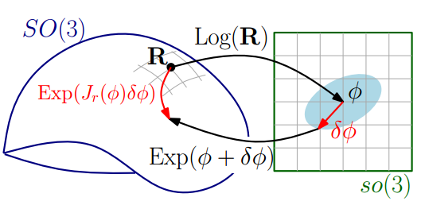

李群与李代数
在视觉SLAM的后端求解中，我们是想要得到一个最佳位姿T，使得整体的误差最小化，即满足：
这是一个典型的非线性最小二乘问题。因此我们需要求解变幻矩阵T的导数。
这里为了简单起见，假设没有平移，只有旋转。我们知道，旋转矩阵对加法不封闭，就是说两个旋转矩阵相加并不是一个旋转矩阵。因此在利用最小二乘求最小化误差的过程中，不能直接对旋转矩阵求导。但是，李代数是由向量组成的，对加法封闭，因此我们可以通过对李代数求导来间接对旋转矩阵求导。
指数映射
从《视觉SLAM十四讲》第4讲中，我们知道SO3和so3之间满足指数映射：
这个式子的是通过对旋转矩阵R在t=0附近一阶泰勒展开得到的，因此向量Φ反映了R的导数性质。可以理解为，李群空间中的任意一个旋转矩阵R都可以用一个向量的反对称矩阵的指数来近似。从微分几何的概念上看，向量Φ所属的空间是R所属的流形空间的正切空间，正切空间上的单位向量代表了流形空间上该点所有可能的移动方向，模长代表了移动的快慢。(图片来自Wikipedia)

Rodrigues’s Formula
从《视觉SLAM十四讲》第3讲中，我们知道旋转向量n和旋转矩阵R之间存在如下的对应关系：
这个公式被成为Rodrigues’s Formula。同时，书中第四讲中，给出了李群SO3和李代数so3之间的对应关系，和上面的公式类似：
因此，通过对比我们可以看出，旋转向量空间其实就是李代数空间。因此我们可以说旋转矩阵的导数可以由对应的旋转向量指定，指导如何在旋转矩阵中作微积分运算。
李代数求导与微扰
由于李代数由向量组成，因此对加法运算封闭。所以李代数可以根据我们熟悉的导数定义(加法)进行求导。然而这种求导的结果中有复杂的Jacobian，所以一般采用微扰法进行求导：对李群进行微扰然后对该扰动求导。如下图所示，红色代表对李代数求导，结果中有Jacobian；而黑色代表微扰法，结果很简洁。

参考文献
高翔 视觉SLAM十四讲